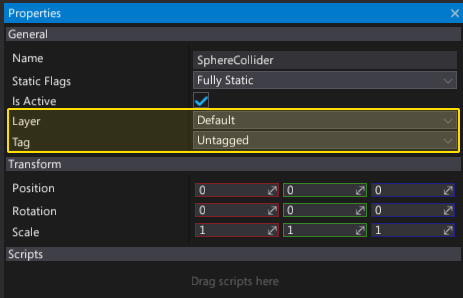
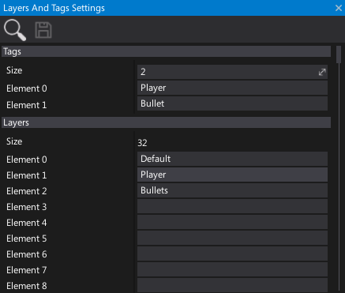

Layers And Tags Settings
Every actor can have a game tag and be assigned to one of the layers.
Using tags and layers helps with identifying and filtering objects.
For example, a player actor can have a Player tag and when a box trigger, which is attached to a car, detects it within a range it can allow the player to enter the car.
Flax allows defining unlimited amount of tags and up to 32 different layers.
Layers are also used by the physics engine to filter objects collisions and by rendering system to draw objects using a layer mask filter.
Set actor tag/layer

You can assign a game tag and layer to every actor. It can be done in-editor (by using Properties window) or at runtime using Actor.Layer and Actor.Tag properties.
Properties

| Property | Description |
|---|---|
| Tags | Collection of game tags. |
| Layers | Array of 32 layers. |
Note
If you edit tags/layers names, a restart of the editor is required to see the changes.